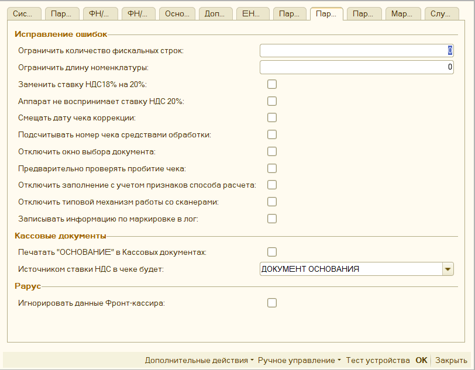

Параметры обработки¶
Важно: при изменении параметров обработки, необходимо перезапускать 1С, чтобы настройки обновились. Параметры обработки, до закладки Основные параметры являются настройками компоненты оборудования, и меняются в зависимости от выбранного оборудования и версии драйверов к ним, обработка на них не может повлиять, и настройки для них необходимо смотреть на сайте у производителя выбранного оборудования
Системные параметры¶

Ревизия - версия формата работы, который поддерживает компонента оборудования, а значит и сама программа. Подробнее об этом на сайте ИТС. Сейчас наиболее актуальной является ревизия 3003, однако не все компоненты и конфигурации ее поддерживают.
Версия обработки - выводит текущую версию, используемой программы
Версия драйвера - выводит информации о версии установленного драйвера оборудования, либо версии используемой компоненты.
Наименование - наименование компоненты оборудования.
Описание - более подробная информация о компоненте оборудования. Например, для оборудования ВикиПринт в этом поле отображается историяи изменений компоненты оборудования.
Основные параметры¶

«Путь к ключу лицензирования» - путь к лицензии на обработку. Заполняется, в случае использования режима «Лицензия» (см. «Лицензирование»). Для использования обработки в режиме «Демо» заполнение не требуется.
«Лицензирование» - определяет режим использования обработки, Возможны следующие варианты «Демо», «Лицензия» или «Ферма RDP-серверов». См. «Лицензирование»
«Путь к файлу технической поддержки» - путь к файлу технической поддержки. Файл указывает, какая именно версия обработки доступна. Необходимо сформировать, если компьютер отключен от интернета или имеет нестабильный интернет. см. «Лицензирование»
«Система налогообложения» - данное поле обязательно для заполнения, отвечает, какая система налогообложения будет передана на печать. Является системой налогообложения по умолчанию при использовании функционала «Распределение СНО».
«Распределение по секциям» - позволяет настроить использование разных секций налогового учета в чеке, в том числе в разрезе складов. «Распределение по секциям»
«Дополнительное оборудование» - позволяет указать параметры подключения дополнительных фискальных регистраторов к данной обработке (см. «Подключение дополнительного оборудования»).)
«Шаблон документа» - позволяет напечатать внутри фискального чека собственный текст. Для каждого типа документа задается собственный шаблон. Можно задать шаблон для строки номенклатуры (см. «Шаблон документа печати»).
«Шаблон строки основания - позволяет заменить строку, которая формируется вместо фискальной при Авансовых платежах, на собственную. (см. «Шаблон строки основания»).
«Распределение по СНО» - позволяет задать условия использования разных систем налогообложения в одном чеке (см. «Распределение СНО»).
«Настройка открытия формы проверки печати» - позволяет задать, открывать для выбранного документа «Форму проверки печати», либо не открывать. По умолчанию, форма открывается всегда (см. «Настройка открытия формы»).
«Ставка НДС \<По умолчанию>» - позволяет задать, какую ставку НДС использовать при заполнении чека, нужно использовать, если не устраивает стандартный способ заполнения. Для настройки см. Механизм распределения
«Путь до собственного обработчика» - путь до внешней обработки, в которой реализован дополнительный функционал для печати. Например, можно задать собственный способ для печати. Сама обработка лежит в архиве с основной, также записано несколько видео по разработке
Дополнительные параметры¶

«Куда сохранять чек» - путь к папке на компьютере, куда обработка может сохранять сформированные чеки, либо то, что необходимо отправить на email клиенту или по смс.
«Рассылка чеков EMAIL средствами 1С» - определяет параметры отправки чеков на EMAIL из 1С через встроенные механизмы (см. «Рассылка чеков средствами 1С по Email»).
«Рассылка чеков SMS средствами 1С» - определяет параметры отправки чеков по SMS из 1С через встроенные механизмы (см. «Рассылка чеков средствами 1С по SMS»).
«Email отправителя» - содержит Email вашей организации. Передается в ОФД вместе с печатью чека. Заполнять, необязательно.
«Ограничение времени продажи» - позволяет настроить временной интервал продажи товара. Например, ограничение на продажу алкоголя.
«Настройка формы проверки печати» - позволяет выборочно настраивать доступность элементов формы проверки печати (см. «Настройка формы проверки печати»).
«Брать информацию о кассире из» - позволяет определить откуда необходимо брать информацию о кассире в чеке. Возможные варианты:
- Реквизит «Ответственный» - если в документе есть поле «Ответственный», либо аналогичные ему, то информация будет взята из документа. Однако при открытии и закрытии смены будет использован текущий пользователь;
- Текущий пользователь – система сама попытается определить текущего пользователя информационной базы
- Указать вручную – данные о кассире будут взяты из параметров обработки:
- «Кассир» - имя кассира, которое будет отображаться в чеке. Если оно не заполнено, то будет передано имя текущего пользователя 1С.
- «ИНН Кассира» - ИНН кассира, которое будет передаваться в ОФД. Если не заполнен, то обработка попытается определить ИНН кассира самостоятельно: проверит, есть ли у пользователя или прописанного этому пользователю физлица реквизит ИНН, либо указана информация в поле комментарий, либо дополнительное свойство «ИНН».
- «Должность кассира» - должность кассира, которая будет отображаться в чеке
ЕНВД, УСН, Нефискальные чеки¶
«Печатать вместо номенклатуры одно наименование» - применяется для организаций, где не нужно учитывать проданный товар. При включении на печать выводится только одна строка, где количество равно одному, а цена равна сумме платежа. Текст для печати выбирается в параметрах «Номенклатура по умолчанию».
«Номенклатура по умолчанию» - содержит текст, который будет напечатан в чеке, если включен параметр «Печатать вместо номенклатуры одно наименование».
«Условие подмены номенклатуры» - позволят настроить условие, когда можно подменить одну номенклатуру на другую. См. Задать условие подмены номенклатуры
«Считать «НДС0%» как «БЕЗ НДС» - указывает на то, как рассматривать нулевую ставку НДС при печати чека, по умолчанию данный параметр включен.
«Наименование организации» - пока не задействован, используется для печати не фискальных чеков. Данные не передается в ОФД.
«ИНН» - пока не задействован, используется для печати не фискальных чеков. Данные не передается в ОФД.
«КПП» - пока не задействован, используется для печати не фискальных чеков. Данные не передается в ОФД.
«Наименование магазина» - пока не задействован, используется для печати не фискальных чеков. Данные не передается в ОФД.
«Наименование ОФД» - наименование ОФД, которое будет отображаться в копии чека.
Параметры драйвера¶

«Указывать номер или Email клиента» - влияет на то, будет ли открываться окно для ввода Email и номера телефона клиента при формировании чека.
«Автоматически заполнять email по данным контрагента» - при включенном параметре, программа будет пытаться определить email контрагента автоматически.
«Аппарат без фискального накопителя» - позволяет печатать чеки для тех фискальных регистраторов, что не имеют фискального накопителя и переключены в режим печати «ЕНВД».
«Копии чека» - позволяет настроить печать копии чека на обычный принтер. См. «Печать копии чека»
«Передавать чеки в ОФД без печати» - если передается email или номер телефона клиента, то чек не будет напечатан, а только будет передан в ОФД.
«Авт. открывать\закрывать смену» - если параметр включен, то при печати чека обработка проверяет статус смены, если смена превысила 24-часа, то она автоматически закроет и откроет ее заново. Работает только если обработка подключена как «Фискальный регистратор»
«Открывать ден. ящик из 1С» - если у фискального регистратора есть денежный ящик, то он будет открываться из 1С при печати фискального чека.
«Пробивать чек при «Открытии чека» - используется, если обработка подключена как «Фискальный регистратор», позволяет пробивать чека, не при операции «Закрытии чека», а при «Открытии чека», проблема связана с тем, что на более современных конфигурациях, убрали отмену чека при ошибке во время закрытия чека, поэтому если у вас проводятся чеки, даже если закончилась бумага на Фискальном регистраторе, то вам нужно включить данный параметр.
«Эквайринговые терминалы» - позволяет указать параметры подключения эквайринговых терминалов к данной обработке (см. Подключение эквайринговых терминалов)
«Не открывать окно эквайрингового терминала при печати» - данный параметр отключает открытие окна с суммой, что будет пробита на эквайринговом терминале, также в этом окне можно указать ссылочный номер пробитого чека на эквайринге, необходим при возвратах.
«Задержка перед печатью слип-чека, сек» - позволяет увеличивать задержку перед печатью слип-чека на эквайринге, что полезно, если на фискальном регистраторе нет автоматической отрезки. Работает, если печать происходит через фискальный регистратор. Максимальное время задержки 40 секунд.
Параметры документов¶

«Ограничить количество фискальных строк» - исправление ошибки оборудования «Переполнение буфера», связанной с нехваткой оперативной памяти аппарата. При заданном ограничении чек будет разбит на несколько маленьких. Важно: при таком варианте будет несколько фискальных чеков. Не используется, если значение 0.
«Ограничить длину номенклатуры» - исправление ошибки оборудования, связанной со слишком большой длиной фискальной строки. При заданном ограничении текст фискальной строки будет обрезан до заданной длины. Не используется, если значение 0.
«Заменить ставку НДС 18% на 20%» - заменяет переданную ставку НДС 18% на 20%, подходит для старых конфигураций, не поддерживающих новую ставку.
«Аппарат не воспринимает ставку НДС 20%» - необходимо включить, если при печати чека с НДС 20% фискальный регистратор выдает ошибку. Тогда обработка передаст на оборудование ставку 18%, но с суммой НДС равной НДС 20%.
«Смещать дату чека коррекции» - необходимо включить, если при печати чека коррекции дата основания смещается на день.
«Подсчитывать номер чека средствами обработки» - необходимо включить, если нумерация чеков не начинается с 1 в начале смены, а передается сквозная.
«Отключить окно выбора документа» - если обработка не сможет определить документ перед печатью чека, то появится окно с выбором документа вручную, данная настройка позволяет его отключить, однако все равно нужно переопределить функционал печати через доп обработчик.
«Предварительно проверять пробитие чека» - перед пробитием чека обработка дополнительно проверяет пробит ли чек ранее по этому документу, такой параметр стал актуален на новых конфигурациях на обычных формах, в них убрали данную проверку.
«Отключить заполнение с учетом признаков способа расчета» - отключает алгоритм заполнения с учетом признаков способа расчета, когда признак способа расчета "Аванс" заменяется на единую строку платежа, когда позиции по признаку способа расчета "Предоплата" учитываются не как "Товар", а как "Платеж"
«Отключить типовой механизм работы со сканерами» - отключает механизм работы с торговым оборудованием, когда сканер штрихкодов уже подключен к 1С через типовой функционал, такой механизм есть в конфигурациях Управление торговлей 10.3, Управление производственным предприятием 1.3, и т.д. При этом будет использован функционал, которые заложен в самой обработке.
«Записывать информацию по маркировки в лог» - после сканирования маркировки дополнительно сохраняет содержимое марки в файл лога, если логирование включено.
«Печатать «ОСНОВАНИЕ» в Кассовых документах» - позволяет вначале документа напечатать текстовую строку «Основания». Например, «Контрагент такой-то Основание документа такое-то». Строка основания будет напечатана, если в тексте нет фискальных строк с тем же самым текстом. Есть возможность задать собственный шаблон формирования такой строки
«Источником ставки НДС в чеке будет» - данный параметр определяет какая ставка НДС будет проставляться в кассовые документы: по документу основания, либо по текущему документу. Возможны варианты: «Кассовый документ» или «Документ основания». При этом если будет выбран параметр "Кассовый документ", то при формировании чека программа фильтрует строки чека с учетом именно ставки кассового документа, товары с другой ставкой в чек не попадут.
«Игнорировать данные Фронт-кассира» - используется для конфигураций Рарус, если включен, то при печати через форму «фронт кассира» или «фронт менеджера», несмотря на указанные в ней товары, данные для печати будут взяты прямо из документа основания, однако суммы оплаты будут все равно взяты и фронт кассира.
Параметры для ФФД¶

«Распределение, когда оплата частичная» - данная настройка определяет, как обойтись с разницей между суммой платежа и суммой документа. Можно задать несколько условий:
-
«РАСПРЕДЕЛЯТЬ СТРОКИ» - при печати автоматически «строка распределения» уменьшит количество в чеке, так чтобы оно подходило под данную сумму, возможны дробные значения для штучного товара;
-
«ЗАМЕНИТЬ НА АВАНС» - заменяет все фискальные строки на текст «Оплата по документу основание» и признак способа расчета «Аванс» и признак предмета расчета «Платеж», если используется НДС, то ставка ндс будет заменена на ее эквивалент для авансовых платежей вида 20/120%
-
«ЗАМЕНИТЬ НА ЧАСТИЧНУЮ ОПЛАТУ» - в каждой фискальной строке количество становится равно 1, цена становится равна сумме фактической оплаты в поле Признак предмета расчета устанавливается "Платеж", в поле "Признак способа расчета" - "Предоплата частичная", если используется НДС, то будет заменен на его эквивалент для авансовых платежей, вида НДС 20/120%
-
«ЗАМЕНИТЬ НА "НОМЕНКЛАТУРА ПО УМОЛЧАНИЮ"» - заменяет все фискальные строки на текст из реквизита «Номенклатура по умолчанию», Признак предмета расчета «Передача с полной оплатой» и признак предмета расчета «Товар»
-
«СТАНДАРТНО» - оставляет стандартный вариант распределения, когда если используется передача с частичной оплате передается весь чек, однако в поле оплаты появляется дополнительный вид оплаты «Постоплата» или «Зачет аванса» с разницей между фактической оплатой и общей суммой документа.
«Признак Агента» - позволяет настроить условие, когда и какой признак агента, и данные по агентскому договору необходимо заполнять в чеке. См. «Распределение по договорам Агента»
«Поставщик агента» - позволяет указать данные поставщика агента, которые будут выводиться в чеке. См. «Настройка поставщика агента»
«Признаки предмета расчета» - позволяет настроить условие, когда и какой признак предмета расчета необходимо заполнять в чеке. См. «Настройка признаков предмета расчета»
«Признаки способов расчета» - позволяет настроить условие, когда и какой признак способов расчета необходимо заполнять в чеке. См. «Настройка признаков способа расчета»
«Адрес Магазина» - для формата обмена ФФД 1.05, ФФД 1.1 и ФФД 1.2, содержит Адрес магазина, который будет передан в ОФД, также может быть использован для печати не фискальных чеков.
«Место расчетов» - для формата обмена ФФД 1.05, ФФД 1.1 и ФФД 1.2, содержит место расчетов, которое будет передано в ОФД.
«Номер ГТД и Страна» - позволяет задать условие передавать информацию о Номере таможенной декларации и коде страны происхождения товара. См. «Настройка печати реквизитов ГТД и Страны»
«Данные о получателе» - позволяет задать условие передавать информацию о покупателе или нет в чек. См. «Настройка печати получателя и его ИНН»
Маркировка¶

«Использовать маркировку лекарств» - специальная настройка для использования продажи лекарств. При ее включении становится доступно использование льгот и рецептов при продаже лекарств, дробная продажа упаковки лекарств, а также при этом будут автоматически заполняться теги 1084, 1085, 1191.
«Идентификатор места деятельности МДЛП» - идентификатор места продажи, передается в составе тега 1085, является обязательном при продажи лекарств.
«Типы маркировок» - позволяет настроить условие, когда и какой тип маркировки необходимо заполнять в чеке. Используется для маркировочной продукции: Табак, алкоголь, лекарства и т.д. См. Настройка типа маркировки
«Разрешительный режим» - позволяет настроить разрешительный режим продажи маркированного товара. См. Разрешительный режим продажи маркировки
«Интервал запроса площадок CDN, мин.» - период, в течение которого список запрошенных площадок CDN для проверки маркировки считается актуальным. Запрос площадок происходит в момент проверки чеков, поэтому первый чек в таком интервале может пробиваться с задержкой.
«Задержка на отправку проверки маркировки на ККТ, сек» - время ожидания перед отправкой запроса на проверку маркировки, при использовании разрешительного режима, на случай, если ККТ зависает при отправке большого количества запросов.
«Не пробивать чек без указания маркировки «ПРОДАЖА» - если в чеке используется продукция с маркировкой, то чек на Приход не будет пробит, если какая-то позиция не будет заполнена.
«Не пробивать чек без указания маркировки «ВОЗВРАТ» - если в чеке используется продукция с маркировкой, то чек на Возврат не будет пробит.
Разрешить частичную продажу упаковок или в розлив - позволяет использовать механизм частичной продажи маркированного товара, когда может продаваться только часть от целой упаковки, такое может применяться для парфюмерии или лекарств. См. Частичная продажа упаковок маркированного товара
Схема определения элементов упаковки - позволяет указать способ определения составляющих упаковки, См. Частичная продажа упаковок маркированного товара
Ждать ответа ОИСМ при проверке маркировки - позволяет пропустить время ожидания ответа от сервера Честного знака при проверке маркированного товара для ФФД 1.2. По факту будет проведена только локальная проверка формата марки, не рекомендуется для использования.
Служебное¶

«Дополнительные параметры» - позволяет указать собственные параметры, которые можно использовать в коде доп обработчика. См. «Дополнительные параметры»
«Оборудование» - указывает на то, какую компоненту для работы с оборудованием будет использовать обработка.
«Путь до компоненты ТО» - путь к папке на компьютере, где находятся компоненты для работы с торговым оборудованием. Должен быть всегда заполнен.
«Использовать COM Обертку над NATIVE» - данный параметр влияет на то, нужно ли использовать специальную компоненту для работы с компонентами Native, это нужно, если у вас платформы 8.1, либо у вас возникли сложности при стандартном подключении. Компонента называется Universal Native Wrapper и лежит с остальными компонентами.
«Использовать логирование ККТ» - указывает нужно ли вести подробную запись действий с фискальным регистратором. Нужен для отладки и проверки механизма печати. Работает, если заполнен параметр «Путь папки лога».
«Путь папки лога» - путь до папки на компьютере, где будет храниться лог действий пользователя. Лог сохраняется в файл Log54FZ.txt, с указанием текущего дня. Работает, если включен параметр «Использовать логирование ККТ».
«Подключение кассы» - параметр может принимать два состояния:
-
"СТАНДАРТНО" – при такой настройке оборудование всегда будет находиться в состоянии подключено, при разрывах соединения с кассой могут быть ошибки, этот параметр значительно увеличивает скорость печати.
-
"НЕСКОЛЬКО РАБОЧИХ МЕСТ НА КАССЕ" - используется, если на фискальный регистратор одновременно могут печатать несколько компьютеров, что-то вроде очереди печати
Для конфигураций Рарус, этот параметр включен всегда, из-за особенностей самого механизма работы с торговым оборудованием
«Время ожидания переподключения» - используется, когда параметр «Подключение кассы» установлен как "НЕСКОЛЬКО РАБОЧИХ МЕСТ НА КАССЕ", обозначает время, при котором обработка будет ждать подключения, если при печати касса оказалась занята на другом рабочем месте.
«Прокси» - позволяет настроить отправку http запросов обработки через прокси-сервер, например это необходимо для передачи данных на сервер sms-рассылки, или для работы сервера лицензирования. См. настройка подключения прокси
Ручное управление¶

«Открыть смену» - открывает смену на данном фискальном регистраторе.
«Закрыть смену» - закрывает смену на данном фискальном регистраторе. Отличается от типовой процедуры тем, что не формирует документ отчет о продажах.
«Внесение» - позволяет внести денежные средства в кассу.
«Выемка» - позволяет сделать выемку денежных средств из кассы.
«Получить текущее состояние» - отображает информацию о фискальном регистраторе: Номер смены, Номер текущего документа, Статус смены, Количество непереданных фискальных документов, Номер первого непереданного фискальных документов, Дата первого непереданного фискального документа.
«Отчет о состоянии расчетов» - формирует фискальный документ «Отчет о состоянии расчетов».
«X-Отчет» - формирует отчет без гашения (x-отчет) на фискальном регистраторе.
«Чек коррекции» - открывает форму для формирования чека коррекции, данную кнопку нужно использовать, если ваша конфигурация не содержит документ «Чек коррекции»
«Открыть денежный ящик» - открывает денежный ящик на данном фискальном регистраторе.
«Параметры фискализации» - открывает форму с регистрационными данными вашего фискального регистратора. Например, можно узнать какой формат обмена с налоговой данный поддерживает аппарат.
«Сохранить настройки в файл» - позволяет сохранить параметры обработки в файл для последующего восстановления. Можно переносить настройки с одного рабочего места на другое.
«Восстановить настройки из файла» - позволяет восстановить ранее сохраненные параметры обработки.
«Лицензирование» - открывает форму лицензирования, где можно активировать или деактивировать лицензию на обработку.
«Скачать обработку» - открывает окно, где можно скачать последнюю доступную версию программы.
«Дополнительные покупки» - открывает окно, где можно приобрести дополнительные лицензии, или продлить тех поддержку.
«Написать разработчику» - открывает форму, где можно отправить письмо разработчику (не используя почтовую рассылку), сообщить об ошибке, либо высказать пожелания о доработке.
«О программе» - Выводит на экран информацию о текущей версии программы, ее дате выхода, и получения актуальной версии программы.